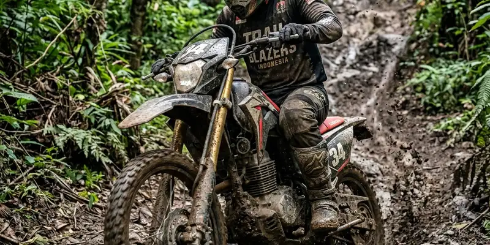

Jenis kendaraan offroad yang umum digunakan meliputi mobil jip, motor trail, dan ATV, yang masing-masing memiliki karakteristik berbeda sesuai medan dan tingkat kesulitan yang ingin dihadapi.
Ringkasan Inti
- Mobil jip umumnya digunakan untuk medan berat dengan kapasitas penumpang lebih dari satu orang.
- Motor trail cocok untuk jalur sempit dan medan menantang yang membutuhkan kelincahan.
- ATV menjadi pilihan populer bagi pemula karena relatif mudah dikendalikan.
- Pemilihan kendaraan sebaiknya disesuaikan dengan pengalaman pengemudi dan karakteristik medan yang akan dilalui.
Apa Saja Jenis Kendaraan yang Umum Digunakan untuk Offroad?
Jenis kendaraan yang umum digunakan untuk offroad meliputi mobil jip, motor trail, ATV, dan truk offroad yang telah dimodifikasi khusus untuk medan berat.
- Mobil jip, yang dikenal dengan ground clearance tinggi dan sistem penggerak roda yang mendukung medan berat seperti tanjakan curam atau bebatuan.
- Motor trail, yang dirancang ringan dan lincah sehingga cocok untuk jalur sempit di area pegunungan atau hutan.
- ATV (All Terrain Vehicle), kendaraan roda empat dengan desain kompak yang relatif mudah dikendalikan bagi pemula.
- Truk offroad modifikasi, yang sering digunakan dalam kompetisi karena memiliki spesifikasi khusus untuk menghadapi medan ekstrem.

Motor trail sangat diandalkan untuk menaklukkan celah-celah sempit yang tidak bisa dilalui kendaraan roda empat.
Apa Karakteristik Masing-Masing Jenis Kendaraan Offroad?
Karakteristik masing-masing jenis kendaraan offroad ditentukan oleh desain, kapasitas penumpang, tingkat kelincahan, dan jenis medan yang paling sesuai untuk digunakan.
Karakteristik Mobil Jip
Mobil jip umumnya memiliki bodi yang kokoh, ground clearance tinggi, serta sistem penggerak empat roda yang membantu melewati medan berat seperti lumpur, bebatuan, atau tanjakan curam. Kendaraan ini cocok digunakan untuk perjalanan berkelompok karena kapasitas penumpangnya lebih dari satu orang.
Karakteristik Motor Trail
Motor trail dirancang lebih ringan dan lincah dibanding mobil offroad, sehingga cocok untuk jalur sempit yang sulit dilalui kendaraan roda empat. Namun, mengendarai motor trail membutuhkan keseimbangan dan keterampilan khusus, terutama di medan yang tidak stabil.
Karakteristik ATV
ATV memiliki desain roda empat yang kompak dengan sistem kendali yang relatif sederhana, menjadikannya pilihan populer bagi pemula yang ingin mencoba aktivitas offroad tanpa memerlukan keterampilan tinggi.
Bagaimana Memilih Kendaraan Offroad Sesuai Medan dan Kebutuhan?
Memilih kendaraan offroad sesuai medan dan kebutuhan dilakukan dengan mempertimbangkan tingkat pengalaman pengemudi, jenis medan yang akan dilalui, dan tujuan aktivitas offroad yang ingin dicapai.
- Pertimbangkan tingkat pengalaman; pemula sebaiknya memilih kendaraan yang lebih mudah dikendalikan seperti ATV.
- Sesuaikan jenis kendaraan dengan medan, misalnya mobil jip untuk medan berat berkelompok atau motor trail untuk jalur sempit.
- Pertimbangkan tujuan aktivitas, apakah untuk rekreasi santai atau tantangan yang lebih ekstrem.
- Pastikan kendaraan yang dipilih dalam kondisi layak dan sesuai standar keselamatan sebelum digunakan.
Kesimpulan
Memahami jenis kendaraan offroad dan karakteristiknya membantu menentukan pilihan yang tepat sesuai pengalaman dan medan yang akan dihadapi. Sesuaikan kendaraan dengan kebutuhan agar aktivitas offroad berjalan aman dan menyenangkan.
FAQ Jenis Kendaraan Offroad
Ya, ATV umumnya dianggap lebih mudah dikendalikan sehingga sering menjadi pilihan awal bagi pemula yang baru mencoba aktivitas offroad.
Motor trail membutuhkan keseimbangan dan keterampilan khusus karena hanya memiliki dua roda, sehingga risikonya dapat berbeda dibanding mobil jip yang lebih stabil karena memiliki empat roda.
Tidak semua; kemampuan mobil jip untuk medan berat tergantung pada spesifikasi dan modifikasi yang dimiliki kendaraan tersebut.